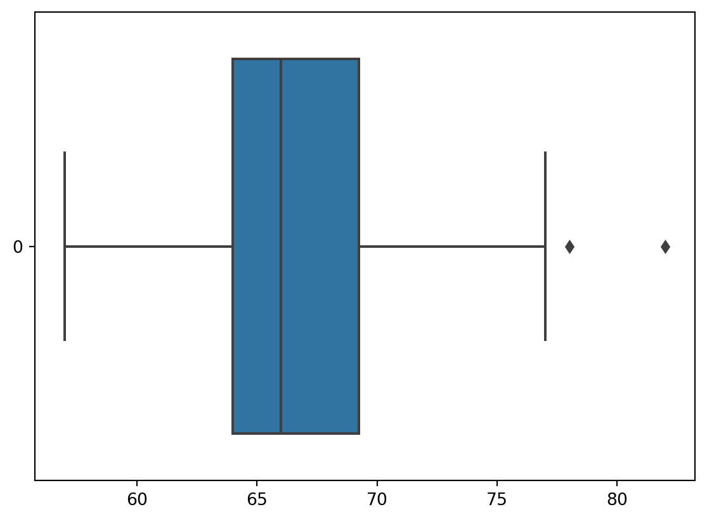
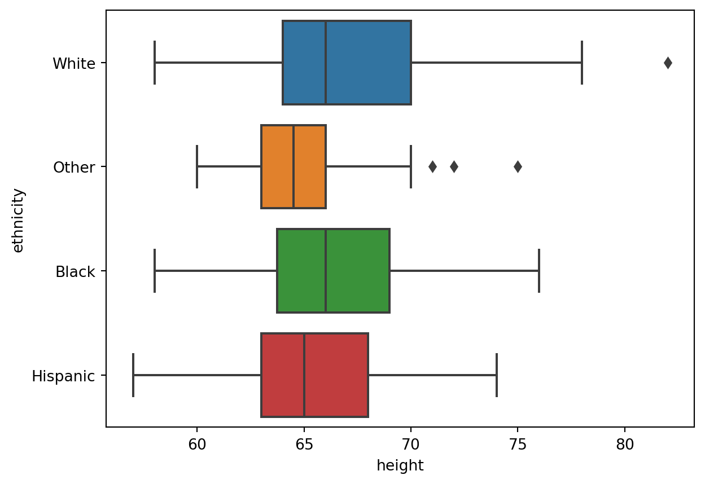
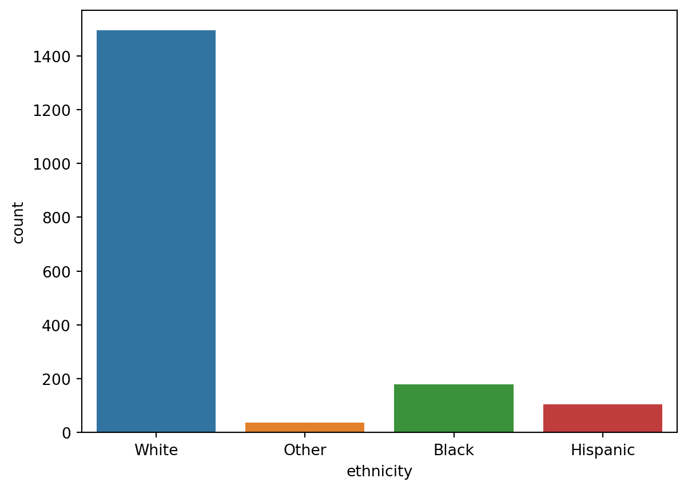

# Pakete importieren
import numpy as np
import pandas as pd
import seaborn as sns7 Deskriptive Statistik
In dieser Übung werden wir die Grundlagen der deskriptiven Statistik mit Pandas kennenlernen. Wir werden uns mit den folgenden Themen beschäftigen:
- Daten einlesen
- Einfache Datentransformationen durchführen
- Deskriptive Statistiken berechnen und interpretieren
- Daten visualisieren
Im folgenden werden wir die Daten einer Studie über die Besucher eines Einkaufszentrums analysieren. Die Daten enthalten 1816 Interviews von Personen in einem Einkaufszentrum. Wir werden die folgenden Variablen betrachten:
- height (numeric): Größe in Inch (1 Inch = 2.54 cm)
- weight (numeric): Körpergewicht in Pfund (pounds) (1 pound \approx 0.45 kilograms)
- male (numeric): 1: Männlich, 0: Weiblich
- earn (numeric): Jahreseinkommen USD
- earnk (numeric): Jahreseinkommen in 1,000 USD
- ethnicity (character): Ethnie (White, Black, Hispanic, Other)
- age (numeric): Alter (in Jahren)
# Zuerst laden wir die Daten
# In den Übungen brauchen Sie sich um das Laden der Daten nicht zu kümmern, der Code zum Einlesen wir von uns bereitgestellt.
customers = pd.read_csv('https://github.com/febse/data/raw/main/econ/earnings.csv')
# Die ersten 5 Zeilen anzeigen, um einen Überblick zu bekommen
customers.head()| height | weight | male | earn | earnk | ethnicity | education | mother_education | father_education | walk | exercise | smokenow | tense | angry | age | |
|---|---|---|---|---|---|---|---|---|---|---|---|---|---|---|---|
| 0 | 74 | 210.0 | 1 | 50000.0 | 50.0 | White | 16.0 | 16.0 | 16.0 | 3 | 3 | 2.0 | 0.0 | 0.0 | 45 |
| 1 | 66 | 125.0 | 0 | 60000.0 | 60.0 | White | 16.0 | 16.0 | 16.0 | 6 | 5 | 1.0 | 0.0 | 0.0 | 58 |
| 2 | 64 | 126.0 | 0 | 30000.0 | 30.0 | White | 16.0 | 16.0 | 16.0 | 8 | 1 | 2.0 | 1.0 | 1.0 | 29 |
| 3 | 65 | 200.0 | 0 | 25000.0 | 25.0 | White | 17.0 | 17.0 | NaN | 8 | 1 | 2.0 | 0.0 | 0.0 | 57 |
| 4 | 63 | 110.0 | 0 | 50000.0 | 50.0 | Other | 16.0 | 16.0 | 16.0 | 5 | 6 | 2.0 | 0.0 | 0.0 | 91 |
# Die Anzahl der Zeilen und Spalten anzeigen
customers.shape(1816, 15)# Die Spaltennamen anzeigen
customers.columnsIndex(['height', 'weight', 'male', 'earn', 'earnk', 'ethnicity', 'education',
'mother_education', 'father_education', 'walk', 'exercise', 'smokenow',
'tense', 'angry', 'age'],
dtype='object')The dataset customers contains 1816 observations (customers) and 15 variables (columns). We will focus on the variables height and weight for now. We want to understand the characteristics of the customers in terms of their height and weight. It is extremely difficult to process and understand the raw data directly, because we must think about 2 \times 1816 = 3632 numbers. Therefore, we need to reduce the data to a few numbers that we can reason about. This is the goal of descriptive statistics.
In diesem Kurs werden wir uns auf zwei Fragen konzentrieren: - Wo liegen die Daten (Lage, location)? - Wie start streuen die Daten? In diesem Beispiel können wir uns z.B. fragen wie unterschiedlich die Besucher in Bezug auf ihre Größe sind.
Die wichtigste Zusammenfassungsstatistik (eine Funktion der Daten) ist der Stichprobenmittelwert, auch bekannt als arithmetisches Mittel. Um den Mittelwert und weitere Statistiken zu definieren, führen wir hier einige Notationen ein.
7.1 Notation
Eine Variable ist eine Eigenschaft, die wir an einer Person, einem Objekt oder einem Ereignis messen können. In diesem Beispiel ist die Variable height die Größe einer Person. Im allgemeinen werden wir solche Variablen mit mit lateinischen Buchstaben bezeichnen, z.B. x, y, z. Was diese Bezeichnungen bedeuten, hängt vom Kontext ab. In diesem Beispiel sei x die Größe der Personen aus der Erhebung. Wir werden die Beobachtungen (hier Personen) üblicherweise mit einem Index bezeichnen: i = 1,2, \ldots, n, wobei n die Anzahl der Beobachtungen ist. Die Werte der Variable x für die Beobachtungen i = 1,2, \ldots, n bezeichnen wir mit x_1, x_2, \ldots, x_n.
Zum Beispiel ist die Größe des zweiten Besuchers x_2 = 66 Inch.
Definition 7.1 (Stichprobenmittelwert (Sample Mean)) \bar{x} = \frac{1}{n} \sum_{i=1}^{n} x_i
Das ist einfach die Summe aller Werte geteilt durch die Anzahl der Werte.
\bar{x} = \frac{x_1 + x_2 + \ldots + x_n}{n}
Beispiel 7.1 (Stichprobenmittelwert) Lasst uns den Mittelwert der ersten drei Besucher ausrechnen: x_1 = 74, x_2 = 66, x_3 = 64.
\frac{74 + 66 + 64}{3} = 68
# Extract the height of the second customer
# Remember that the index is 0-based, so the second customer has index 1
customers["height"][1]66# Extract the heights of the first three customers
# Remember that indexing is exclusive, so the last index is not included
customers["height"][:3]0 74
1 66
2 64
Name: height, dtype: int64# Calculate the average height of the first three customers
customers["height"][:3].mean()68.0Nun möchten wir den Mittelwert der Größe für alle Besucher berechnen.
print(customers["height"].mean())
print(np.mean(customers["height"]))66.56883259911895
66.568832599118957.2 Streuung
Der Mittelwert informiert uns über das Zentrum (Lage) der Daten. Die zweite Charakteristik einer Variable, die wir verstehen wollen, ist wie weit die Daten verteilt sind (wie unterschiedlich, heterogen, die Kunden in Bezug auf die Größe sind, zum Beispiel). Der Begriff der Streuung ist abstrakt und kann auf verschiedene Weisen gemessen werden. Wir können uns die Streuung zum Beispiel als die durchschnittliche Differenz der Kunden zum Mittelwert vorstellen. Dies ist das Konzept der Varianz.
Definition 7.2 (Stichprobenvarianz und Stichprobenstandardabweichung) Für eine Variable x mit n Beobachtungen: x_1, x_2, \ldots, x_n, ist die Stichprobenvarianz definiert als:
S_x^2 = \frac{1}{n-1} \sum_{i=1}^{n} (x_i - \bar{x})^2
Dabei ist \bar{x} der Stichprobenmittelwert.
Die Stichprobenstandardabweichung ist die Quadratwurzel der Stichprobenvarianz:
S_x = \sqrt{S^2}
Beispiel 7.2 (Stichprobenvarianz und Stichprobenstandardabweichung) Lasst uns die Stichprobenstandardabweichung für die ersten drei Besucher berechnen x_1 = 74, x_2 = 66, x_3 = 64.
Zuerst müssen wir den Stichprobenmittelwert ausrechnen: \bar{x} = 68 (Beispiel 7.1)
Danach berechnen wir die Differenzen der Werte zum Mittelwert und quadrieren diese:
S^2 = \frac{(74 - 68)^2 + (66 - 68)^2 + (64 - 68)^2}{3-1} = \frac{36 + 4 + 16}{2} = 28
Die Stichprobenstandardabweichung ist die Quadratwurzel der Stichprobenvarianz:
S = \sqrt{28} \approx 5.29
# Hier replizieren wir die Berechnung der Varianz der Größe der ersten drei Kunden
customers["height"][0:3].var()28.0# Sie können die Varianz auch mit der numpy Funktion np.var berechnen
np.var(customers["height"][0:3])18.666666666666668np.var(customers["height"][0:3], ddof=1)28.0# Die Standardabweichung der Größe der ersten drei Besucher berechnen
customers["height"][0:3].std()5.291502622129181np.std(customers["height"][0:3], ddof=1)5.291502622129181np.var und np.std berechnen die Stichprobenvarianz und -standardabweichung nach der Formel
S^2 = \frac{1}{1 - \text{ddof}} \sum_{i=1}^{n} (x_i - \bar{x})^2
wobei ddof die Anzahl der Freiheitsgrade im Nenner (denominator degrees of freedom) steht. Die Voreinstellung ist ddof=0.
7.3 Weitere Maße der Lage und Streuung
Die Reduzierung auf einen einzigen Wert als Stichprobenmittelwert ist sehr nützlich, weil wir leicht darüber nachdenken können (nur ein Wert). Allerdings ignoriert diese Reduktion viele Details über die Kunden. Zum Beispiel wissen wir nicht, wie viele Kunden nahe am Mittelwert sind, wie viele weit entfernt sind, und so weiter. Die Standardabweichung hilft uns, dies zu verstehen, ist aber immer noch eine einzige Zahl.
Um unser Verständnis der Daten weiter zu vertiefen, können wir andere Maße der Lage und Streuung verwenden.
- Der Median ist der Wert, der die Daten in zwei gleiche Hälften teilt. Es ist der Wert, der die gleiche Anzahl von Beobachtungen über und unter sich hat. Sie können sagen, dass etwa die Hälfte der Beobachtungen einen Wert kleiner als den Median hat und etwa die andere Hälfte einen Wert größer als den Median hat. Ein anderer Name für den Median ist das zweite Quartil (Q2). Dies kommt daher, dass die Stichprobe in vier Teile geteilt wird. Ein weiterer Name für den Median ist das 50. Perzentil (Teilung der Stichprobe in 100 Teile) oder das 0,5-Quantil.
- Das erste Quartil (Q1) ist der Wert, der die ersten 25% der Daten von den restlichen trennt. Sie können sagen, dass ungefähr 25% der Beobachtungen einen Wert kleiner als Q1 und 75% einen Wert größer als Q1 haben. Ein anderer Name für das erste Quartil ist das 25. Perzentil oder das 0,25-Quantil.
- Das zweite Quartil (Q2) ist der Median.
- Das dritte Quartil (Q3) ist der Wert, der die ersten 75% der Daten von den restlichen trennt. Sie können sagen, dass ungefähr 75% der Beobachtungen einen Wert kleiner als Q3 und 25% einen Wert größer als Q3 haben. Ein anderer Name für das dritte Quartil ist das 75. Perzentil oder das 0,75-Quantil.
- Das Maximum ist der größte Wert in den Daten. Es wird manchmal das 100. Perzentil genannt.
- Das Minimum ist der kleinste Wert in den Daten. Es wird manchmal das 0. Perzentil genannt.
Die Differenz zwischen dem Minimum und dem Maximum ist der Bereich (range) der Daten. Es ist ein Maß für die Streuung der Daten, aber es ist sehr anfällig für extreme Werte. Ein Ausreißer ist ein Wert, der sehr weit von den anderen Werten entfernt ist. Der Median und die Quartile sind weniger anfällig für Ausreißer und werden als robuste Maße der Lage und Streuung bezeichnet.
Die Differenz zwischen dem dritten und dem ersten Quartil ist der Interquartilsabstand (IQR). Es ist ein Maß für die Streuung der mittleren 50% der Daten. Es ist auch ein robustes Maß der Streuung, da es weniger anfällig für Ausreißer ist.
# Mittelwert, Standardabweichung, Minimum und Maximum und die Quartile der Größe der Kunden berechnen
customers["height"].describe()count 1816.000000
mean 66.568833
std 3.831822
min 57.000000
25% 64.000000
50% 66.000000
75% 69.250000
max 82.000000
Name: height, dtype: float64# Falls wir nur eine der statistischen Kennzahlen berechnen wollen, können wir auch die entsprechende Funktion verwenden
print(customers["height"].min())
print(customers["height"].quantile(0.25))
print(customers["height"].quantile(0.5))
print(customers["height"].quantile(0.75))
print(customers["height"].max())57
64.0
66.0
69.25
82# Den Interquartilsabstand berechnen
customers["height"].quantile(0.75) - customers["height"].quantile(0.25)5.25Berechnen Sie den Mittelwert, Median, Standardabweichung, Minimum, Maximum, Quartile und Interquartilsabstand für das Gewicht der Kunden.
# Schreiben Sie Ihren Code hierHäufig werden diese Quantile und der Interquartilsabstand in einem Boxplot dargestellt. Ein Boxplot ist ein Diagramm, das die Verteilung der Daten in einem Box-Whisker-Diagramm darstellt. Die Box repräsentiert das Interquartilsintervall (IQR). Die Whisker repräsentieren die Daten außerhalb des IQR. Punkte, die außerhalb der Whisker liegen sind Punkte, die weit von den anderen Daten entfernt sind und werden Ausreißer genannt (was ein Ausreißer ist, ist allerdings kompliziert).
sns.boxplot(customers["height"], orient="h")
Die Boxplots sind nützlich, wenn wir die Verteilung einer Variablen in verschiedenen Gruppen vergleichen wollen. Als Beispiel können wir die Verteilung der Größe in verschiedenen ethnischen Gruppen vergleichen.
sns.boxplot(x = customers["height"], y = customers["ethnicity"])
7.4 Zusammenfassung kategorialer Variablen
Der Mittelwert und die Standardabweichung machen nur für Variablen Sinn, für die Addition und Multiplikation sinnvoll sind. Insbesondere machen sie keinen Sinn für kategoriale Variablen, z. B. die Ethnie der Kunden.
Die wichtigste Zusammenfassung für kategoriale Variablen ist die Häufigkeitstabelle. Eine Häufigkeitstabelle zeigt die Anzahl der Beobachtungen für jede Kategorie. Die relative Häufigkeitstabelle zeigt den Anteil der Beobachtungen für jede Kategorie.
customers["ethnicity"].value_counts()ethnicity
White 1494
Black 180
Hispanic 104
Other 38
Name: count, dtype: int64sns.countplot(data = customers, x="ethnicity")
7.5 Datentransformationen
Es ist in fast jeder Analyse notwendig, die Daten zu transformieren. Als Beispiel können wir die Größe in Inch in Zentimeter umrechnen. Die Umrechnung von Inch in Zentimeter erfolgt durch Multiplikation mit 2,54. Die Umrechnung von Pfund in Kilogramm erfolgt durch Multiplikation mit 0,45.
# Hier erstellen wir eine neue Spalte, die die Größe in cm enthält
customers["height_cm"] = customers["height"] * 2.54# Erstellen Sie eine neue Spalte "weight_kg" in dem Dataframe "customers", die die Werte der Spalte "weight" in Kilogramm umrechnet.
# 1 Pfund entspricht 0.453592 Kilogramm.Häufig möchten wir eine stetige Variable in Kategorien einteilen. Zum Beispiel möchten wir eine Variable erstellen, die angibt, ob eine Person jünger als 30 Jahre ist oder nicht. Dies ist eine binäre Variable, die wir aus einer kontinuierlichen Variable erstellen.
customers["is_under_30"] = customers["age"] < 30
customers["is_under_30"].head()0 False
1 False
2 True
3 False
4 False
Name: is_under_30, dtype: boolFalls wir mehr als zwei Kategorien brauchen, bietet die Funktion pd.cut die Möglichkeit, die Daten in Kategorien einzuteilen.
# Wir lassen uns die Häufigkeitsverteilung der Altersgruppen ausgeben,
# um zu sehen, wie pd.cut funktioniert
pd.cut(
customers["age"],
bins=[0, 30, 64, np.inf],
).value_counts()age
(30.0, 64.0] 1041
(0.0, 30.0] 512
(64.0, inf] 263
Name: count, dtype: int64# Hier weisen wir Etiketten der Kategorien und speichern das Ergebnis in einer neuen Spalte "age_group"
customers["age_group"] = pd.cut(
customers["age"],
bins=[0, 30, 64, np.inf],
labels=["<30", "30-64", "65+"]
)
# Als Kontrolle lassen wir uns die ersten 5 Zeilen des Dataframes anzeigen
customers[["age", "age_group"]].head()| age | age_group | |
|---|---|---|
| 0 | 45 | 30-64 |
| 1 | 58 | 30-64 |
| 2 | 29 | <30 |
| 3 | 57 | 30-64 |
| 4 | 91 | 65+ |
7.6 Aufgabe
Berechnen Sie den BMI (Body Mass Index) für die Kunden. Der BMI ist definiert als das Körpergewicht in Kilogramm geteilt durch das Quadrat der Größe in Metern. Das Gewicht muss in Kilogramm und die Größe in Metern sein.
# Erstellen Sie die Spalte "bmi" in dem Dataframe "customers", die den Body Mass Index berechnet.
customers["bmi"] = customers["weight"] / (customers["height"] / 100) ** 2Die Referenzwerte für den BMI sind:
Unter 18,5: Untergewicht
18,5 - 24,9: Normalgewicht
25 - 29,9: Übergewicht
30 oder mehr: Adipositas
Ein Verkäufer behauptet, daß die Kunden im Einkaufszentrum im Durchschnitt übergewichtig sind. Überprüfen Sie diese Behauptung anhand der Daten.
Ein anderer Verkäufer behauptet, daß mehr als ein Viertel der Besucher im Einkaufszentrum adipös sind. Überprüfen Sie diese Behauptung anhand der Daten.
# Berechnen Sie den durchschnittlichen BMI
customers["bmi"].mean()351.1234041165582# Lassen Sie sich die Beschreibung der Spalte "bmi" anzeigen. (Tipp: Verwenden Sie die Methode .describe() der Spalte "bmi").
customers["bmi"].describe()count 1789.000000
mean 351.123404
std 65.866606
min 163.265306
25% 307.478675
50% 340.136054
75% 378.703497
max 761.862330
Name: bmi, dtype: float64Erstellen Sie eine neue Spalte is_underweight in der Tabelle customers, die angibt, ob ein Kunde untergewichtig ist oder nicht. Erstellen Sie eine weitere Spalte is_normal in der Tabelle customers, die angibt, ob ein Kunde ein Normalgewicht hat oder nicht.
Hinweis: Sie können diese Variable mit den logischen Operatoren <, <=, >, >= und == erstellen. Logische Operationen können Sie mit den Operatoren & (und), | (oder) und ~ (nicht) verknüpfen (Hinweis: hier brauchen Sie und).
# Erstellen Sie die zwei Variablen hier
customers["is_overweight"] = customers["bmi"] > 25Wie viele Kunden sind untergewichtig? Wie viele Kunden haben ein Normalgewicht? Hinweis: Benutzen Sie die Methode value_counts um die Anzahl der Kunden in jeder Kategorie zu berechnen. Sie können auch die Methode sum benutzen, um die Anzahl der Kunden in einer Kategorie zu berechnen.
# Wie viele Kunden sind untergewichtig?
# a) mit .value_counts()
# b) mit .sum()Erstellen Sie eine neue Spalte bmi_category in der Tabelle customers, die die Kategorie des BMI angibt (Untergewicht, Normalgewicht, Übergewicht, Adipositas). Hinweis: Sie können diese Variable mit der Funktion pd.cut erstellen.
# Erstellen Sie `bmi_category` hierVisualisieren Sie die Verteilung der Kategorien des BMI. Hinweis: Benutzen Sie die Funktion sns.countplot aus der Bibliothek seaborn.
# Erstellen Sie die Graphik hierNun möchten Wir die Verteilung des BMI für Männer und Frauen vergleichen. Berechnen Sie den Mittelwert des BMI für Männer und Frauen. Hinweis: Sie können die Methode groupby benutzen, um die Mittelwerte für verschiedene Gruppen zu berechnen.
# Als Beispiel für die Benutzung von .groupby() werden hier die Mittelwerte des Alters für jede Ethnie berechnet
customers.groupby("ethnicity")["age"].mean()ethnicity
Black 41.733333
Hispanic 36.288462
Other 41.763158
White 43.571620
Name: age, dtype: float64# Berechnen Sie die Mittelwerte des BMI für Männer und Frauen.# Vergleichen Sie die Verteilungen des BMI für Männer und Frauen mit einem Boxplot.
# Bevor wir die Boxplots erstellen, müssen wir die Variable "male" in eine kategorische Variable umwandeln. Die neue Variable nenne wir "sex"
customers["sex"] = pd.Categorical(customers["male"], ordered=False)
# Erstellen Sie die Boxplots hier